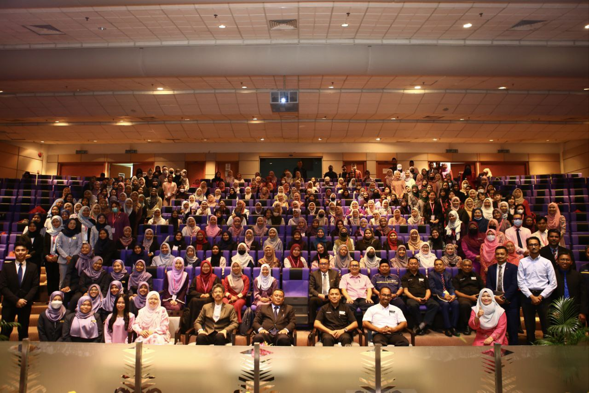

In my second year as a UiTM student, This position also opens doors to networking opportunities, Ultimately, I officially signed off as SMPP on 30th December 2022.

I was elected as the secretary of the Student Representative Council,
and from there I was given the opportunity to polish my skills and abilities through organizing meetings and collaborating with many people.
helping forge connections with fellow council members and university staff.
Event planning and management experience are gained through organizing campus activities.
serving as a representative of students allows for meaningful contributions
to the university community, making a positive impact on campus life and student experiences.